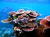

anthozoa

Definition: Anthozoa is a class of marine invertebrates which includes the sea anemones, stony corals and soft corals. Adult anthozoans are almost all attached to the seabed, while their larvae can disperse as part of the plankton. The basic unit of the adult is the polyp; this consists of a cylindrical column topped by a disc with a central mouth surrounded by tentacles. Sea anemones are mostly solitary, but the majority of corals are colonial, being formed by the budding of new polyps from an original, founding individual. Colonies are strengthened by calcium carbonate and other materials and take various massive, plate-like, bushy or leafy forms.
Source: Wikipedia
Wikipedia Page (Something wrong with this association? Let us know.)
Wikidata Page (Something wrong with this association? Let us know.)